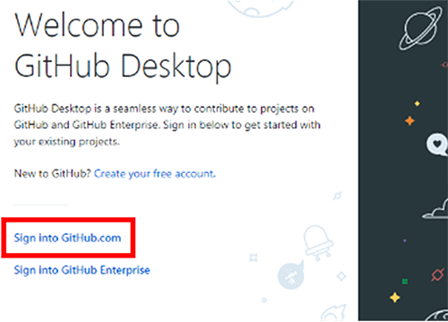
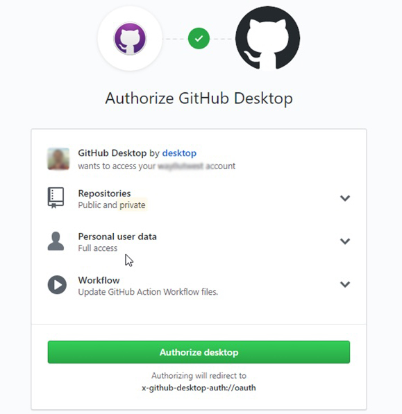

WEB Fundamentals
WDD 130
GitHub Desktop
Overview
- Task: Download and Install GitHub Desktop
- Purpose: GitHub Desktop helps you manage your web files locally on your computer and connect them to your online github.com repository
- Expectation: Everyone will download and install the GitHub desktop program on their personal computers and login using their github account.
Instructions
-
Step 1: Download and Install GitHub Desktop
- Go to: https://desktop.github.com
- Click Download for Windows or Download for macOS
- Open the downloaded file and follow the installation instructions.
Installation usually takes less than a minute.
-
Step 2: Login
After installation:- Open GitHub Desktop
- Click Sign in to GitHub.com

- Log in with your GitHub account
- Authorize GitHub Desktop when prompted
